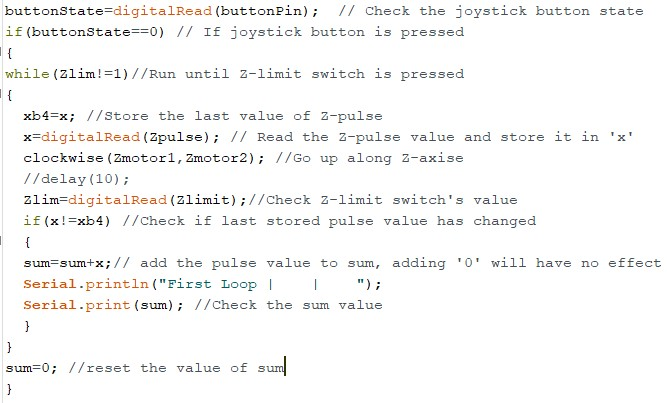

In this article, FischerTechnik’s ROBO TX model’s application to simulate an industrial robot, dedicated to simple industrial processes (e.g. Stacking), is documented. The Robot comes with its own micro controller and software but in this case Arduino’s microcontroller and software is used to control the robot. The article looks at:
- How the Robot (operating at 9V) is interfaced with Arduino microcontroller (operating at 5V). It also discusses the alternative approach for such an interface.
- Controlling all four motors of the robot via a joystick.
- Use of several different techniques to achieve accuracy of the movements since an industrial robot relies heavily on precise measured movements.
- Building a GUI for controlling the robot, using Processing software
- Using Serial communication for communicating with the PC-based GUI application
- Discussing alternative communication approaches
- Practical approach to the robot’s construction
- Testing different aspects of the robot’s hardware and Software and resolving problems based on the results
- User guide to the GUI for the robot
- Further augmentations that can be made to the robot and conclusions made based upon the development process
Background
With the introduction of inexpensive Programmable embedded systems such as Arduino,
Raspberry Pi etc. industrial automation has boosted exponentially in smaller scale
industries. With open source Software approach and huge, rapidly
growing online community, the implementation of these embedded systems into
industrial application is getting cheaper and faster by the day.
Most industrial robots are commonly based on heavy sensor fusion and operate on
complex algorithms, the operation of which exceeds the processing power of
microcontrollers (interfaced directly with the actuators). A master controller
(i.e. a computer), which also acts as an HMI (Human Machine Interface) is used to
control these microcontrollers using standard protocols (e.g. TCP/IP and Modbus)
and to process the complex operations based on the data provided
ROBO TX’s actuators are interfaced with Arduino Uno microcontroller board
(based on the 8 bit Microchip ATmega328P). It operates on a 16Mhz
quartz crystal clock.

Robo TX Design
The operating voltage for ROBO TX is 9V and that of the Arduino board is 5V. The motors of the robot, therefore, couldn’t be controlled via the microcontroller nor can it be connected to the board while operating at 9V for the risk of damaging it. To solve this problem, an 8x Relay board is used with two individual relays dedicated to one motor
Joystick Control
void clockwise(int pin1,int pin2) //Takes in the pin numbers { digitalWrite(pin2,HIGH);//Set relay-2n to normally closed- connected to GND digitalWrite(pin1,LOW); //Set relay-1n to normally open- connected to 9V } void counterClockwise(int pin1,int pin2) { digitalWrite(pin1,HIGH); //Set relay-1n to normally closed- connected to GND digitalWrite(pin2,LOW); //Set relay-2n to normally open- connected to 9V } void Stop(int pin1,int pin2) { digitalWrite(pin1,HIGH);//Set relay-1n to normally closed- connected to GND digitalWrite(pin2,HIGH);//Set relay-2n to normally closed- connected to GND }
void joystick() { xPosition = treatValue(analogRead(xPin)); //Read the X-value of the joystick yPosition = treatValue(analogRead(yPin)); //Read the Y-value of the joystick // Value set to 48 to 56 using treatValue function if((yPosition==52)&&(xPosition==52)) // Joystick's default position, Stop all motors { Stop(Ymotor1,Ymotor2); Stop(Zmotor1,Zmotor2); Stop(Rmotor1,Rmotor2); Stop(Gmotor1,Gmotor2); } else if((yPosition==56)&&(xPosition==52)){ counterClockwise(Ymotor1,Ymotor2); // Y motor counter-clockwise } else if((yPosition==48)&&(xPosition==52)) { clockwise(Ymotor1,Ymotor2); // Y motor clockwise } else if((xPosition==56)&&(yPosition==52)){ counterClockwise(Zmotor1,Zmotor2); // Z motor counter-clockwise } else if((xPosition==48)&&(yPosition==52)) { clockwise(Zmotor1,Zmotor2); // Z motor clockwise } else if((xPosition==48)&&(yPosition==56)){ // R motor counter-clockwise counterClockwise(Rmotor1,Rmotor2); } else if((xPosition==48)&&(yPosition==48)) { // R motor clockwise clockwise(Rmotor1,Rmotor2); //open } else if((xPosition==56)&&(yPosition==56)){ // Grip close counterClockwise(Gmotor1,Gmotor2); //close } else if((xPosition==56)&&(yPosition==48)) // Grip open { clockwise(Gmotor1,Gmotor2); } }
The diagram aboves shows how to operate the robot in realtime using the joystick controls. The upwards direction shown here is toward the pins that connect the joystick to the Arduino microcontroller.
Achieving Movement Precision
Techniques used for getting precise movement:
- Reading Pulses – Improved upon. (inaccurate)
-
Delay()function – Discarded (redundant) - Interrupts – Discarded (Not needed)
- Debounced Pulse Reading – Best Results (slightly inaccurate)
- Time passed using
micros()+ Debounced Pulse reading (FINAL)
Simple Pulse Reading
Delay function for motor movement
The delay() function does the job but is not always accurate and is redundant as it ties
up 100% of the processor. While this function is running no data can be processed or
changed.
Using Interrupts
The main reason for the use of ISR(Interrupt Service Routine) was the functionality
of Rising edge and Falling edge provided by it and the fact that it is run outside
main code hence providing more accuracy.
The method was discarded because redundant methods like delay() were removed and
since there was no parallel programming involved, ISR was not needed.
Debounce Pulse Reading
ROBO TX has two different types of motors:- Encoder motor and XS motor. The Encoder motor sends 3 Pulses every time its turned HIGH while XS motors sends only 1. Hence the motors are debounced(i.e. In this case, reading the pulse successively within a short duration of 2-3ms) slightly differently. An XS motor’s pulse reading is done only twice.
The code above is run multiple times to get an average value of the total
time taken for different values of R_sum and a formula is mapped out
to create a function that double checks the pulse
reading with the amount of time taken. This formula is then added to the while
loop (See the code below). The highlighted number is obtained by the
formula: last_main_time / R_sum over different values of R_sum and averaging
out the number.The functions for other motors are modelled in a similar fashion
Adding Memory
Since the robot doesn’t have any external sensor to sense its position, it must
always go back to the reference position (i.e. hit the limit switches) to know where
it is. This can be solved by adding variables that store the last movements value and
direction. For example, the following highlighted sections are added to the
void RmotMove(int) function.
Adding GUI
To make the robot controllable by a user, a GUI is created using
Processing graphical
library + IDE based on JAVA. The interactive elements to the GUI
(e.g. buttons, sliders etc.) are added using the ControlP5 library.
On hovering over the elements, an interactive dial, slider or button
will appear, the values of which
can then be sent to the robot serially. The buttons on the bottom right
can be used to control the robot in real time.
The Code below shows the initial section of the setup()
function that sets up serial communication with the arduino board, loads the background
image, creates all the widgets etc. The entire codebase can be found in the
github repository.
1
2
3
4
5
6
7
8
9
10
11
12
13
14
15
16
17
18
19
20
21
22
23
24
25
26
27
28
29
30 | void setup() { size(1200, 815); //Define the size of the application window printArray(Serial.list()); // print a list of available ports myPort = new Serial(this, Serial.list()[0], 9600); //Serial object for // for communicating with the port (Com04) connected with Arduino photo=loadImage("Robo.jpg"); // PImage object to upload image noStroke(); // No Outline to the widgets cp5 = new ControlP5(this); // ControlP5 objects to call its functions and widgets Slider_Y= cp5.addSlider("sliderValue") // Add a ControlP5 Slider object .setPosition(400,150) // Set objects position .setRange(0,180) // Set the range of values provided by the slider .setSize(150,20) // Set Slider size .setColorForeground(color(255,0,255,80))// Foreground colour when inactive .setColorBackground(color(0, 160, 100,100))// Background colour .setColorActive(color(255,255,0,170))// Foreground colour when Active (i.e. used) ; myKnobB = cp5.addKnob("knobValue") .setRange(0,255) .setValue(0) .setPosition(134,175) .setRadius(70) .setNumberOfTickMarks(10) // Set number of tick-marks (as in a clock) .setTickMarkLength(4) .snapToTickMarks(false) // Whether to snap to tick marks or fluid motion .setColorForeground(color(255,0,255,80)) .setColorBackground(color(0, 160, 100,100)) .setColorActive(color(255,255,0,100)) .setDragDirection(Knob.HORIZONTAL) // Direction in which to drag the dial ; |
The Draw() function below constantly renders the background image,
tracks mouse position for hover data and if the mouse hovers over one of the control
symbols, it render the slider, dial etc. at that location.
1
2
3
4
5
6
7
8
9 | void draw() { //background(0); image(photo, 0, 0); hover(100,135,180,210,0); hover(300,130,300,60,1); hover(170,420,100,300,2); It_appears(); } |
The video below provides a demonstration of the Graphical HMI for the robot. It goes through the ability of the robot to remember its position, given no real-time control interventions are used. If the real-time controls are used, the robot's position has to be reset to default for the robot to reliably remmember its last position and for the automation widgets to work as expected.
Serial Communication
Serial communication is used to make the Processing GUI (running on a PC)
to talk to the Arduino (Controlling the robot).
After importing the serial library for Processing, a Serial object is created
(i.e.myPort). The object set to talk to COM Port 04 (i.e. Serial.list()[0] in this
case) at the baud rate 9600 which is the used in Arduino code
ControlP5 cp5; Serial myPort; int myColorBackground = color(0, 0, 0); int sld=0; int R_sld; int Z_sld; char[] sld_str; char[] R_sld_str; char[] Z_sld_str; char[] cv; boolean mouse[]={false,false,false,false}; color[] col = new color[] { color(100), color(150), color(200), color(250) }; char dab[]={'a','b','c','d'}; void setup() { size(1200, 815); //Define the size of the application window printArray(Serial.list()); // print a list of available ports myPort = new Serial(this, Serial.list()[0], 9600); //Serial object for // for communicating with the port (Com04) connected with Arduino photo=loadImage("Robo.jpg"); // PImage object to upload image noStroke(); // No Outline to the widgets
An example of the myPort object in use shown in the code block below
public void bangRcl(){ myPort.write("R2"); //When button for clockwise rotation is pressed }//Send The string 'R2' to the serial port public void bangRco(){ myPort.write("R1");// '1' means counter clockwise } public void bangZup(){ myPort.write("Z2");// 'Z' for Z-axis, 2 for UP } public void bangZdown(){ myPort.write("Z1"); //'Z' for Z-axis, 1 for DOWN }
The code section below shows the functions that are called when the GUI sliders or the dials are interacted with and their values are changed.
void sliderTicks1(float Value)//Called evertime slider1 value is changed { Z_sld=Math.round(Value); //Gets the value of the slider and rounds it an integer println("Z_sld"+Z_sld); Z_sld_str=(""+Z_sld).toCharArray();//convert the rounded value to a Char Array } void sliderValue(float theValue) {//Called evertime slider2 value is changed sld=Math.round(theValue);//Gets the value of the slider and rounds it an integer println("Hello"+sld); sld_str=(""+sld).toCharArray();//convert the rounded value to a Char Array } void knobValue(float theVal)//Called evertime dial1 value is changed { R_sld=Math.round(theVal);//Gets the value of the dial and rounds it an integer println("Yo"+R_sld); R_sld_str=(""+R_sld).toCharArray();//convert the rounded value to a Char Array }
The code section below shows the function that is called when the Send Data
button is pressed. A string is created which is then appended to R, Y and Z motor's dial/slider
value. The string is then parsed into a character array, each character of which
is then sent to the Arduino microcontroller separately.
public void controlEvent(ControlEvent theEvent) { if (theEvent.getController().getName().equals("bang1")) { //If 'Send Data' button is pressed send widget values to arduino board println(dab[0]); println(sld_str); // for testing purpose println(cv); StringBuilder sb = new StringBuilder(64); // declare a String builder object // to store the widget values in a single string sb.append(dab[0]); // append a separator sb.append(R_sld_str); //append R_motor's dial value sb.append(dab[1]); //append a separator sb.append(sld_str); // append Y_motor's slider value sb.append(dab[2]); // append a separator sb.append(Z_sld_str);//append Z_motor's slider value cv=sb.toString().toCharArray(); //put the string in a character array for(int f=0;f<cv.length;f++) // run a loop for the length of the char array { myPort.write(cv[f]); // send each character separately to arduino println(cv[f]); // check the values being sent, in the Console } } println( "## controlEvent / id:"+theEvent.controller().getId()+ " / name:"+theEvent.controller().getName()+ " / value:"+theEvent.controller().getValue() ); }
On the microcontroller side, the code running on the Arduino,
a SerialEvent() function listens to any serial data sent, from outside
the loop() function. If serial data is present and is a
digit/alphabet, it is appended to a string(ReadString).
See the code section below.
if(ReadString.length()>0) { if(ReadString.length()==2) { int a; Serial.println(ReadString[1]); switch(ReadString[0]) { case 'R': Move_a_bit(Rmotor1,Rmotor2); break; case 'Z': Move_a_bit(Zmotor1,Zmotor2); break; case 'Y': Move_a_bit(Ymotor1,Ymotor2); break; case 'G': Move_a_bit(Gmotor1,Gmotor2); break; } }
The code section shows a section of Arduino code dealing with the long serial data sent via
the SEND DATA button of the GUI.
Various nested loops are used to check various conditions arising from
the varying length of the values.
The extracted substrings are converted into a character array, which is
then converted into an integer and values are passed into the respective
movement functions for the motors.
if((ReadString[3]=='b')&&(ReadString[7]=='c')) { servo1=ReadString.substring(1,3); servo2=ReadString.substring(4,7); servo3=ReadString.substring(8,ReadString.length()); char carray1[2]; //magic needed to convert string to a number char carray2[3]; char carray3[ReadString.length()-7]; Serial.print("printing out the servo1"); Serial.println(servo1); Serial.println(servo2); servo1.toCharArray(carray1,sizeof(carray1)+1); servo2.toCharArray(carray2,sizeof(carray2)+1); servo3.toCharArray(carray3,sizeof(carray3)+1); Serial.print("Printing out the carray1"); Serial.println(carray1[2]); n1 = atoi(carray1); n2 =atoi(carray2); n3 =atoi(carray3); Serial.print("printing out the n1"); Serial.println(n1); RmotMove(n1); YmotMove(n2); ZmotMove(n3); } else if((ReadString[3]=='b')&&(ReadString[6]=='c')) { ...
Automating Stacking
The video shows the robot being automated to stack the yellow Cylinders on to the plastic shelf, without any human intervention.